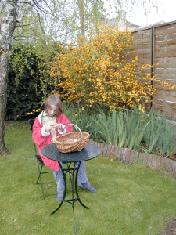
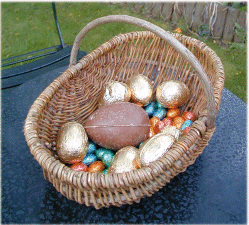
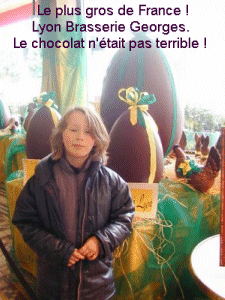

|

 Si vous entrez directement :
Vers
l'entrée du site, cliquez ici
Si vous entrez directement :
Vers
l'entrée du site, cliquez ici
|

Le matin de Pâques la chasse aux œufs
déposés pendant la nuit par le Lapin a
été fructueuse !
|

La brasserie Georges est une des plus
anciennes d'Europe.
Sa grande salle, qui a un plafond de 710 m2
soutenues uniquement par 3 poutres en sapin, a
été construite en 1836. La décoration
"Arts Déco" réalisée en 1924 par
B.F. Guillermin est splendide.
|